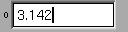

Fl_Valuator | +----Fl_Value_Input
#include <FL/Fl_Value_Input.H>
The Fl_Value_Input widget displays a numeric value. The user can click in the text field and edit it - there is in fact a hidden Fl_Input widget with type(FL_FLOAT_INPUT) or type(FL_INT_INPUT) in there - and when they hit return or tab the value updates to what they typed and the callback is done.
If step() is non-zero, the user can also drag the mouse across the object and thus slide the value. The left button moves one step() per pixel, the middle by 10 * step(), and the right button by 100 * step(). It is therefore impossible to select text by dragging across it, although clicking can still move the insertion cursor.
If step() is non-zero and integral, then the range of numbers are limited to integers instead of floating point values.

Creates a new Fl_Value_Input widget using the given position, size, and label string. The default boxtype is FL_DOWN_BOX.
Destroys the valuator.
Get or set the color of the text cursor. The text cursor is black by default.
If "soft" is turned on, the user is allowed to drag the value outside the range. If they drag the value to one of the ends, let go, then grab again and continue to drag, they can get to any value. The default is true.
Gets or sets the color of the text in the value box.
Gets or sets the typeface of the text in the value box.
Gets or sets the size of the text in the value box.